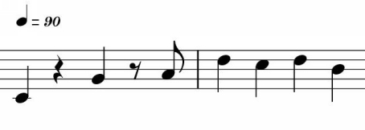

Figure 1.13 Notice the two rests in the first bar
Since music consists both of sound and silence, times when a musician is playing and times when they are not, written music consists both of notated pitches (notes) and the space between those pitches when the musician is not playing. These spaces are called rests, and they must be used to fill all of the spaces between notes in order to add up to the total value of a bar.
For example, if a standard 4/4 bar is being used, then there is a certain amount of available space (totaling four quarter notes, or eight eight notes, or something of equal value). If three quarter notes (three beats) are notated, and if the rest of the bar is meant to be silent, then the composer needs to insert a rest to fill the rest of the bar up. In this case, the rest would be a quarter note rest, which is a kind of beat-length rest. There will be more on rests as this guide progresses. For now, we will say that there are in general three types of notated rests:
1. Beat-length
2. Bar-length
3. “Tacet” rests.
A beat-length rest takes up the same amount of space as a given number of beats. It can be a quarter note rest, an eighth note rest, a half note rest, or it can be greater or less than any of those, up to a whole note rest (taking up the same space as four beats, or a full bar in 4/4 time).
A bar-length or measure-length rest instructs the player to rest for one or more bars at a time. These are useful during passages when an instrument is waiting for other instruments to finish their parts.
During long periods of resting, when a particular instrument is not playing (perhaps they do not play during this section of music at all), the word “tacet” may be written on the staff, instructing the performing to rest for a long period of time (until otherwise notated), for instance when a musician is silent for a whole movement. The word “tacet” is Latin and it means: it is silent.